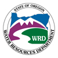
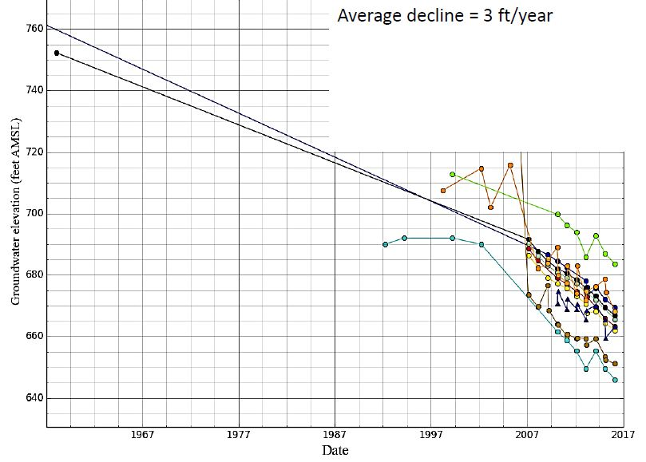
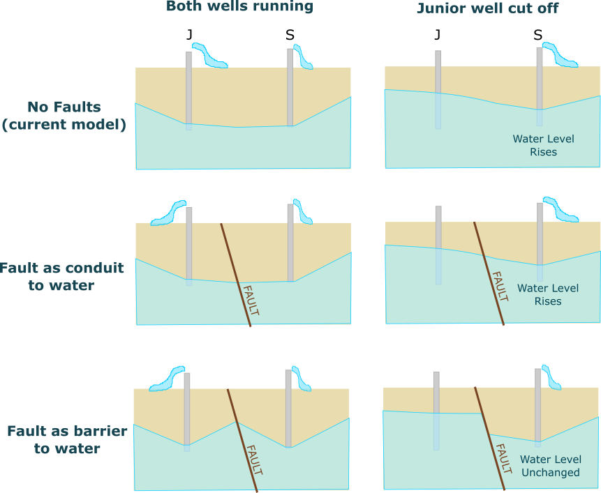
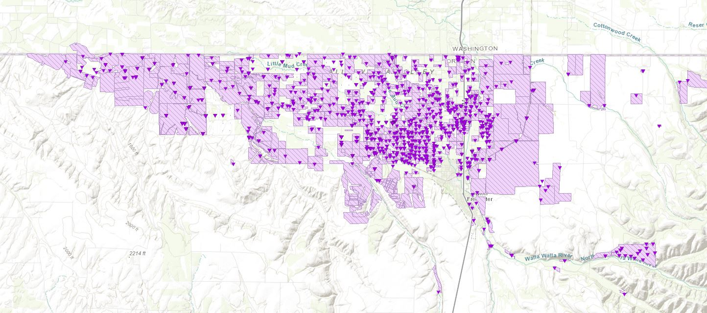
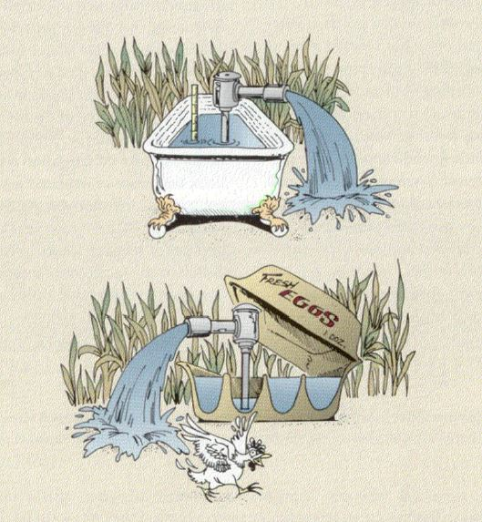
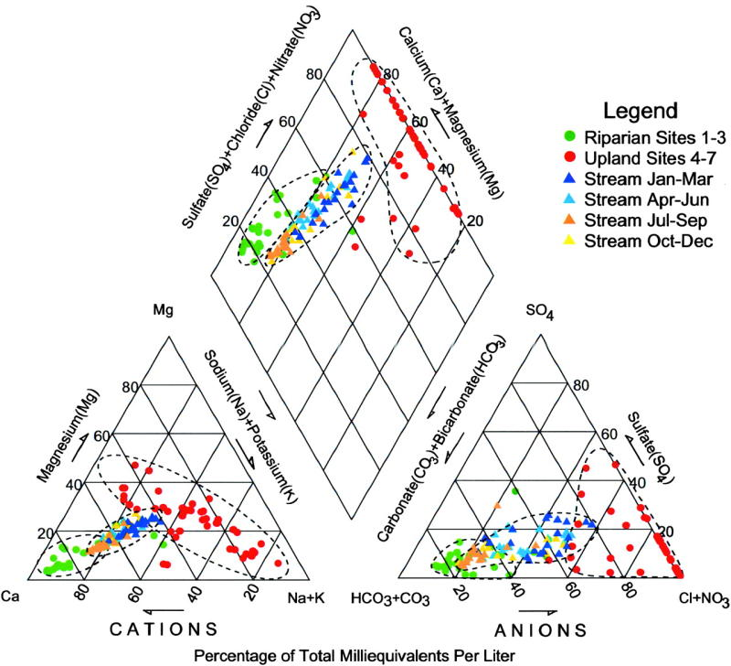
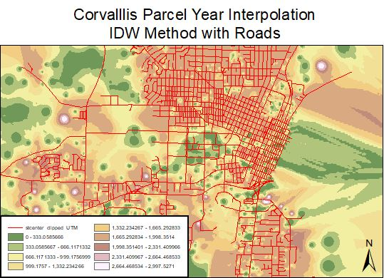

The Walla Walla Watershed drains a large, agriculturally productive region of Oregon and Washington defined geologically by the Columbia River Basalt. My study area is the part of it that lies in Oregon, outlined on the map in red - I'll refer to it as the Walla Walla Sub Basin (WWSB)
My research is associated with the Oregon Water Resource Department's(OWRD)ongoing project to characterize the WWSB basalt groundwater system. In addition to my OSU thesis committee, I'm working with hydrogeologists Jen Woody and Justin Iverson with the OWRD and Hank Johnson from the Portland office of the US Geological Survey.
My research will support groundwater management by using spatial analysis of geochemical samples to help determine whether local faults isolate compartments of groundwater. If this research confirms internal diversity within the aquifer, clusters of water users drawing from the same aquifers can more effectively cooperate to prevent excessive groundwater decline. I will test this by sampling approximately 35 wells drilled into a heavily faulted area of the Columbia River Basalt, analyzing the samples for isotopes, cations, and anions, and analyzing the similarities and differences between the spatial distribution of groundwater geochemical signatures compared to the faults in the region.
The lowlands of the WWSB are intensively developed for agriculture and depend on both groundwater and surface water to irrigate in an arid climate. The region gets on average 15 to 20 inches of rain per year, compared to Corvallis' 40 to 50 inches. Farmers in the WWSB make up the difference with surface water and groundwater pumped either from the shallow sands and gravels along the Walla Walla River or from the deeper aquifers in the Columbia River Basalt.
Water levels in the basalt aquifer in the WWSB have been decreasing by up to 4 feet per year since the 1960s. A continued decrease would make many wells run dry if their owners cannot afford to drill deeper.
image (c) Jen Woody, OWRD
Groundwater in Oregon is managed with the doctrine of prior appropriation, which in times of shortage temporarily shuts off users with younger (junior) water rights so that users with older (senior) water rights can access their full allotted amount of water. The prior appropriation doctrine assumes that all the water is coming from a common source, and that cutting off junior users will results in more water available to senior users. In a compartmentalized aquifer, this may not be the case. Faults can act as either flow paths or flow barriers, and studies have shown that in the Deschutes Basin of the Columbia River Basalt the faults block groundwater flow. However, no such studies have yet been done in the WWSB.
image (c) Courtney van Stolk
When senior ground water users' "water call" requires that OWRD enforce the doctrine of prior appropriation, the OWRD defines "Critical Groundwater Area" (CGA) in the appropriate geographical area. In the nearby Critical Groundwater Areas located near Hermiston, Oregon, where water rights had been over-allocated, 67% of users lost their water allocation to preserve the senior water rights of the remaining 33% when the area was declared a CGWA.
The image below shows the distribution of ground water rights in the WWSB. Areas shaded in purple indicate land that has a groundwaterright associated with it, for irrigation, temperature control, industrial, agricultural, or municipal supply.
image from the OWRD Water Rights Mapping Tool
There is an urgent need for solutions to slow the decline in the basalt aquifer's water levels in the WWSB. The silver lining of this is that it creates an opportunity to try new solutions. OWRD has two administrative tools available to reduce use: CGWA enactment or approving Voluntary Groundwater Agreements (VGAs) in the area, where both senior and junior ground water right holders would collaborate to reduce their use of water instead of having junior permit holders cut off entirely. However in order to do this, OWRD needs to know which groups of water rights are drawing water from the same aquifer compartment, if the aquifer is broken by faults. In an analogy completely motivated by a creative image found in an OWRD presentation, the system may not be a bathtub but an egg carton, and we need to know which users will share each cell.
image (c) Jen Woody, OWRD
With OWRD's financial and field support for sampling and analysis, I will take water samples from approximately 35 wells drilled into the basalt aquifer. Then, I will analyze those samples for parameters that support 3 analytical goals to evaluate groundwater compartmentalization : ion geochemistry profiling, age dating, and source water differentiation.
As part of a standard geochemical assessment, I will analyze samples at OSU's IWW Collaboratory for 4 cations and 5 anions in order to create a Stiff-Piper diagram of the results, which will help to see if there are clusters of wells with similar chemistry. An example of this diagram from another set of sites is shown below:
For age dating, water samples will be analyzed for tritium and carbon-14 at the USGS laboratory. Finally, I will analyze water samples at OSU's Stable Isotope Laboratory for oxygen and hydrogen isotope ratios. Both isotope data and age of the waters can indicate different sources for the groundwater and provide additional methods to determine wells that draw from the same body of water.
Once the samples have been analyzed and the results are back, I will use geospatial methods to evaluate the possibility of groups of wells with similar or unique water chemistry. This will include spatial interpolation methods as well as analysis in a multivariate statistical package. An example of what spatial interpolation looks like is shown below, where the ages of homes in Corvallis, OR were evaluated using inverse distance weighting to create a "surface" showing areas of young and old construction compared to the road network which is overlaid.
I'll compare the chemical data to my understanding of the physical properties of the region, such as faults, slopes, low permeability layers, and well construction characteristics. In particular I will compare the spatial distribution of the chemical data to fault locations in order to test the hypothesis that faults act as barriers to groundwater flow.